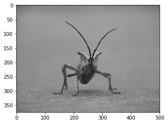
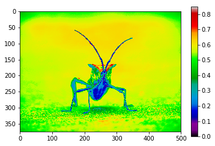
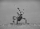
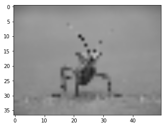
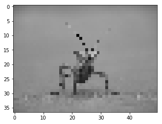

Matplotlib image tutorial¶
This is a partial of the official matplotlib introductory image tutorial in the form of a notebook.
In [51]:
%matplotlib inline
import matplotlib.pyplot as plt
import matplotlib.image as mpimg
import numpy as np
In [52]:
img = mpimg.imread('data/stinkbug.png')
img.shape
Out[52]:
(375, 500, 3)
In [53]:
s = 3
print(img[:s,:s:,0])
print(img[:s,:s:,1])
print(img[:s,:s:,2])
[[ 0.40784314 0.40784314 0.40784314]
[ 0.41176471 0.41176471 0.41176471]
[ 0.41960785 0.41568628 0.41568628]]
[[ 0.40784314 0.40784314 0.40784314]
[ 0.41176471 0.41176471 0.41176471]
[ 0.41960785 0.41568628 0.41568628]]
[[ 0.40784314 0.40784314 0.40784314]
[ 0.41176471 0.41176471 0.41176471]
[ 0.41960785 0.41568628 0.41568628]]
In [54]:
plt.imshow(img);

In [55]:
lum_img = img[:,:,0]
fig, ax = plt.subplots()
imgplot = ax.imshow(lum_img)

In [56]:
imgplot.set_cmap('hot')
imgplot.figure
Out[56]:

In [57]:
imgplot.set_cmap('nipy_spectral')
imgplot.figure
Out[57]:

In [58]:
imgplot.set_cmap('nipy_spectral')
fig.colorbar(imgplot)
fig
Out[58]:

In [59]:
plt.hist(lum_img.flatten(), bins=256, range=(0.0, 1.0), fc='k', ec='k');

Most often, the “interesting” part of the image is around the peak, and
you can get extra contrast by clipping the regions above and/or below
the peak. In our histogram, it looks like there’s not much useful
information in the high end (not many white things in the image). Let’s
adjust the upper limit, so that we effectively “zoom in on” part of the
histogram. We do this by setting the the clim for the plot:
In [60]:
fig, (ax1, ax2) = plt.subplots(1, 2, figsize=(11, 6))
imgplot1 = ax1.imshow(lum_img)
ax1.set_title('Before')
fig.colorbar(imgplot1, ax=ax1, ticks=[0.1, 0.3, 0.5, 0.7], orientation ='horizontal')
imgplot2 = ax2.imshow(lum_img)
imgplot2.set_clim(0.0, 0.7) # Set the color limits manually
ax2.set_title('After')
fig.colorbar(imgplot2, ax=ax2, ticks=[0.1, 0.3, 0.5, 0.7], orientation='horizontal');

With scikit-image, we can quickly manipulate our image and for example make a small version of it:
In [61]:
from skimage import io, transform
rs = transform.rescale(img, 1/10)
rs.shape
/Users/fperez/usr/conda/envs/s159/lib/python3.6/site-packages/skimage/transform/_warps.py:84: UserWarning: The default mode, 'constant', will be changed to 'reflect' in skimage 0.15.
warn("The default mode, 'constant', will be changed to 'reflect' in "
Out[61]:
(38, 50, 3)
The Python Imaging Library - Pillow also lets us maninpulate the images, and it provides functionality that is complementary to scikit-image:
In [63]:
from PIL import Image
img = Image.open('data/stinkbug.png') # Open image as PIL image object
img
Out[63]:

In [64]:
rsize = img.resize((np.array(img.size)/10).astype(int)) # Use PIL to resize
rsize
Out[64]:

In [65]:
rsizeArr = np.asarray(rsize) # Get array back
rsizeArr.shape
Out[65]:
(37, 50, 3)
In [66]:
imgplot = plt.imshow(rsizeArr, interpolation='bilinear')

In [67]:
imgplot.set_interpolation('nearest')
imgplot.figure
Out[67]:

In [68]:
imgplot.set_interpolation('bicubic')
imgplot.figure
Out[68]:

Multichannel images¶
In [69]:
sg = mpimg.imread('data/stained_glass_barcelona.png')
sg.shape
Out[69]:
(1200, 628, 4)
In [79]:
plt.rcParams['figure.figsize'] = (6, 12)
plt.imshow(sg);

In [81]:
plt.imshow(sg[:,:,:3]);

In [82]:
np.unique(sg[:,:,3])
Out[82]:
array([ 0.99607843, 1. ], dtype=float32)
In [83]:
plt.imshow(sg[:,:,0], cmap='Reds');